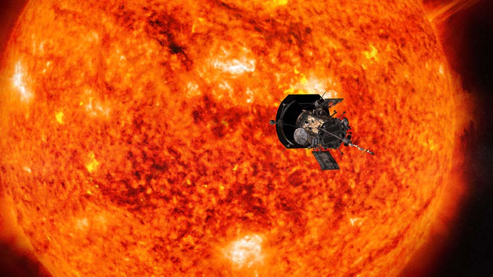

Solar flares are caused when loops of magnetic energy stretching millions of miles from the Sun become unstable. They start to tangle and twist on the Sun's surface, building up to release the energy of about a billion nuclear bombs or the energy equivilent to power the Earth for a million years. When two unstable loops collide, they erupt outward into the solar system at more than a million miles per hour. This usually isn't a problem. We Earthlings don't really worry about solar flares because the chance of being hit by one that could actually cause damage is incredibly low.
Solar flares are like rubber bands. When you twist and stretch a rubber band, it stores potential energy—the more you twist, the more it stores. When it becomes too much, the band snaps and releases all that energy. Solar flares are the same idea, but instead of a slight pinch on your hand, the released energy can be powerful enough to wipe out all life on Earth.
We don't have binoculars for the Sun's moods; instead, we have something a lot more fun: space-based telescopes and satellites. The Solar Dynamics Observatory (SDO) acts as the initial guard dog, watching the Sun to make sure space weather doesn't catch us by surprise. It's constantly monitoring the Sun, recording terabytes of data so we don't have to. It observes the Sun in many wavelengths, which can be used to reveal any hot plasma.
The Parker Satellite essentially does the same thing, but at a much closer distance. Its closest approach to the Sun is 3.8 million miles—so close that it's actually flying through the Sun's upper atmosphere. Using the data from these two satellites, we can categorize any active solar flare heading toward us on a scale, with B being the weakest and X being the strongest. The order goes B, C, M, then X. With this scale, we can understand what the consequences might be from contact with an incoming solar flare.
Before I even get started on the ramifications, let me assure you: you won't be fried to a crisp if you go outside during a solar flare, but it can severely impact the technology we use. An X-class solar flare can blackout radio networks across the globe, interrupt navigation systems, and even damage satellites in orbit. Imagine there's an emergency and you need to call 911—you can't; all phone lines are down. Lost at sea? It's not your lucky day: no one knows where you are, and help cannot and will not reach you.